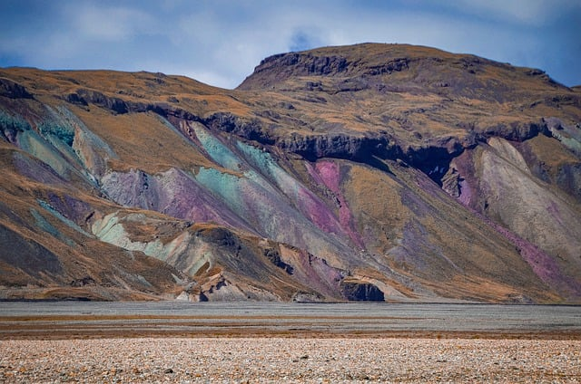
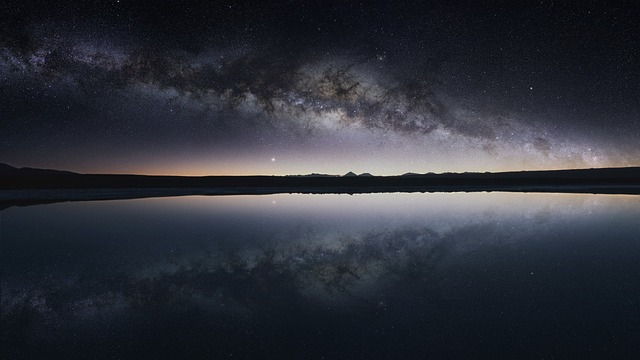

Contact & Info
Architecture & Concept Flow
a2kama와 mirage-engine의 결합은 웹에서 네이티브 수준의 시각적 품질을 제공합니다.
1. Conceptual Flow
- HTML DOM: 브라우저 상의 실제 DOM 트리
- MirageEngine: DOM 트리의 상태를 추적하여 WebGL Scene 내에 1:1 가상 복사본 생성
- a2kama: 가상 복사본에 커스텀 GLSL 셰이더를 주입해 시각적 효과 부여
- WebGL Canvas: 셰이더 연산 결과물을 최종 화면에 렌더링
2. MirageEngine Structure
Syncer & Extractor
Mutation Observer로 DOM 변화를 감지하고, Extractor를 통해 복제 DOM 트리를 갱신 및 디바운싱 처리합니다.
Renderer
Three.js 씬을 초기화하고 Extractor의 트리를 기반으로 Mesh를 생성합니다.
Animator
60FPS 유지를 위해 디바운싱된 변화 사이의 중간 보간(움직임)을 부드럽게 채워 넣습니다.
painter & sandwich
DOM 데이터를 기반으로 텍스처를 생성하며(painter), 셰이더 효과 부분만 실제 DOM 사이에 정교하게 끼워 넣습니다(sandwich).
3. The Role of a2kama
MirageEngine의 Travel 캡처본을 가져와 셰이더로 왜곡(Distortion/Refraction)합니다. 복잡한 셰이더 작성 없이 단순한 데이터 객체(Recipe)만으로 유리 질감을 제어하는 API 레이어입니다.
유리 왜곡 생성 과정 (1/60초)
1. DOM 변화 감지
DOM 재탐색은 무거운 작업이므로, 변화 감지 후 텀을 두고 디바운싱 처리합니다.
2. 보간 (Interpolation)
DOM 탐색 빈도를 줄이고, GSAP 등의 움직임 데이터를 탈취해 Mesh에 동일한 보간을 전달합니다.
3. 프레임 캡처
왜곡을 줄 영역의 GPU Pixel 데이터를 매 순간 가볍게 캡처합니다.
4. 셰이더 왜곡
GPU의 병렬 연산을 활용해 수많은 픽셀에 동시다발적으로 수학적 왜곡(예: 굴절)을 지시합니다.
5. 속성 주입 (Uniforms)
주입 가능한 uniform 변수 데이터를 객체로 전달하여 토큰화된 유리 스타일(Recipe)을 완성합니다.
6. 동적 변형
이 모든 과정이 60FPS로 동작하며, 실제 엘리먼트처럼 완벽한 동적 상호작용을 만듭니다.